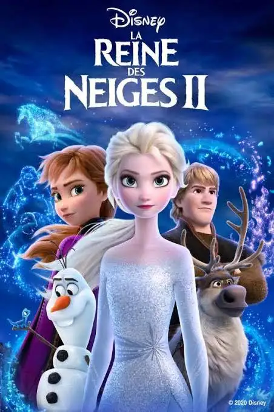

Bob l'éponge
- Auteurs: Stephen Hillenburg, Mark Osborne
- Genre: Animation, Comédie, Aventure
- Description: Dans ce premier long-métrage, Bob l’éponge et son meilleur ami Patrick partent dans une aventure héroïque pour retrouver la couronne volée du roi Neptune, dont M. Krabs est injustement accusé d’avoir orchestré le vol. Les deux amis quittent Bikini Bottom pour un dangereux voyage jusqu’à Shell City, affrontant des monstres marins, des bandits et leurs propres peurs, le tout dans un ton humoristique fidèle à la série.

Reine des neiges II
- Auteurs: Jennifer Lee, Chris buck
- Genre: Animation, Fantastique, Aventure, Comédie musicale
- Description: Dans cette suite, Elsa commence à entendre une mystérieuse voix venue d’ailleurs. Guidée par cet appel, elle entreprend avec Anna, Kristoff, Olaf et Sven un voyage vers une forêt enchantée afin de découvrir l’origine de ses pouvoirs. Les sœurs devront affronter les secrets du passé de leur famille et sauver leur royaume. Le film explore des thèmes plus matures comme l’identité, la mémoire et le lien entre humains et nature..

Matrix
- Auteurs: The Wachowski Brothers
- Genre: Science-fiction, Action, Cyberpunk
- Description: Dans un futur dystopique, un hacker nommé Neo découvre que le monde dans lequel il vit n’est qu’une simulation numérique appelée la Matrice, créée par des machines pour asservir l’humanité. Guidé par Morpheus et Trinity, il se retrouve au cœur d’une rébellion qui pourrait révéler la vérité et sauver l’humanité. Le film explore les thèmes du réel, du contrôle, de la liberté et de la conscience.